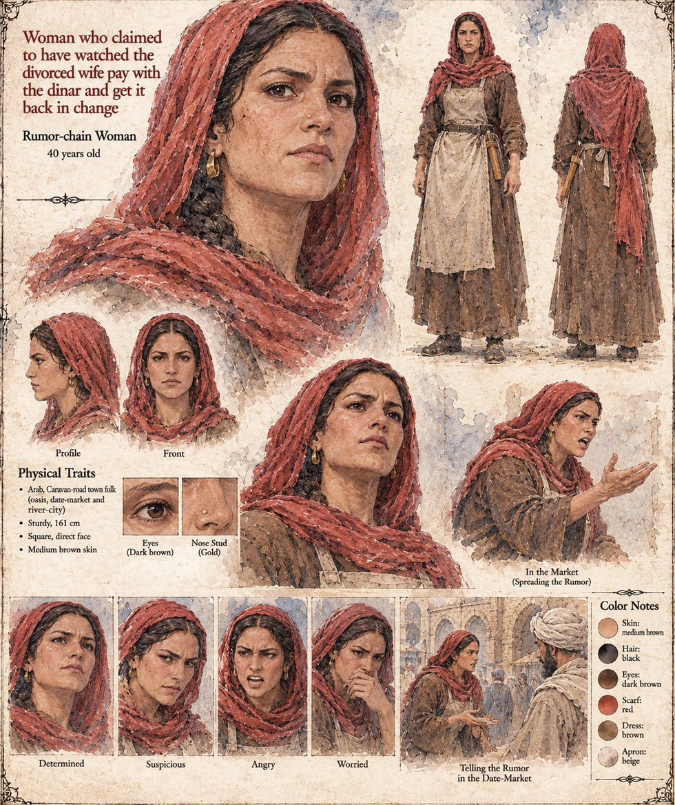

The Rumor-Chain Woman
First link of the rumor that reaches Zaid · unnamed · swore on her mother's grave · about forty by the sheet
A woman who claims to have watched the divorced wife, Amina, pay with the dinar and get the same coin back in her change, and who swears to it on her mother's grave. Hers is the original, unchecked source of the story that reaches the thief Zaid by way of a cousin and a trader, in a wine-tent three days from anywhere. The manuscript gives her no name, place or description.
The sheet draws her sturdy and square-faced, with a direct, unflinching look, black hair braided under a red scarf, dark brown eyes, medium-brown skin and a tiny gold nose stud, in a brown dress and a beige apron, with a trader's tally-stick at her belt. Its expression panels run determined, suspicious, angry and worried, and two scenes show her telling the rumor in the date-market. The age of about forty and everything visual are the sheet's.